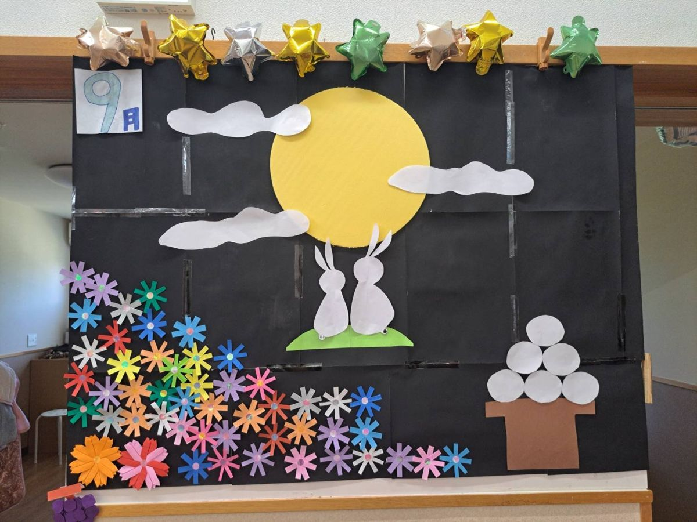
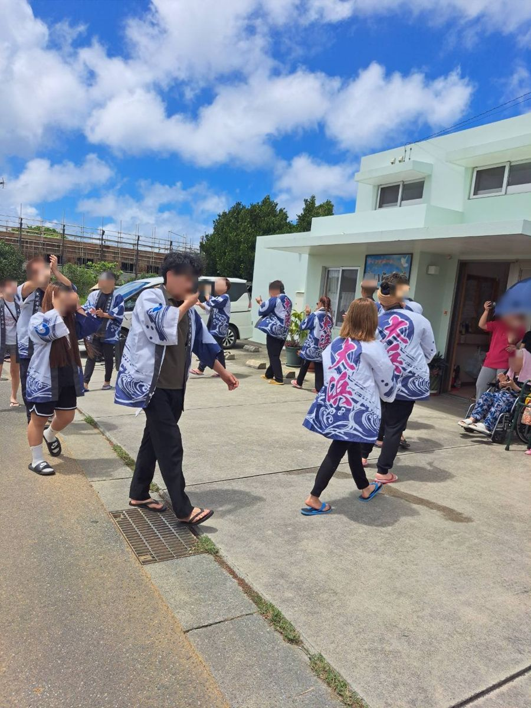
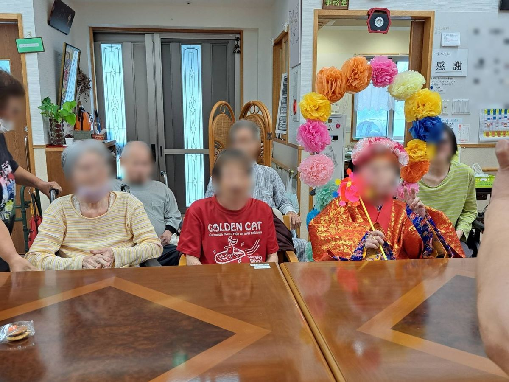
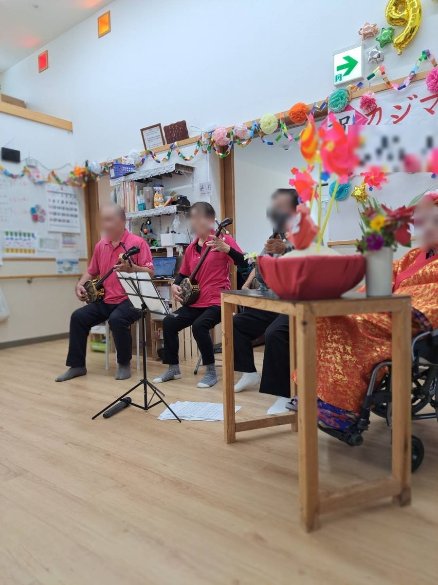

お月見の壁画を飾りました
9月は、お月見をテーマにした壁画を利用者さんと一緒に作りました。満月とうさぎ、色とりどりの花で、季節を感じられる空間になりました。
NEWS & INFORMATION
日々の様子と、サービスに関する最新情報をお届けします。

9月は、お月見をテーマにした壁画を利用者さんと一緒に作りました。満月とうさぎ、色とりどりの花で、季節を感じられる空間になりました。

大浜青年会の皆さんが、エイサーを披露しに来てくださいました。力強い太鼓と踊りに、利用者さんも手拍子で応えていました。ご訪問ありがとうございました。
※プライバシー保護のため、お顔にぼかしを入れています。
97歳を迎えた利用者さんのカジマヤーをお祝いしました。華やかな衣装と花かざりで装い、三線の演奏やお祝いのメッセージカードの贈呈など、みんなで長寿をお祝いしました。

5月生まれの利用者さんのお誕生日会を開きました。スタッフが手話で「君は愛されるため生まれた」を贈ると、感動して喜んでくださる方もいて、あたたかい時間になりました。これからも、ひとりひとりの節目を大切にお祝いしていきます。
※動画は音声なしです。プライバシー保護のため、お顔にぼかしを入れています。SERVICE STATUS
空き状況は日々変わるため、最新の状況はお電話でご案内しています。
はい。担当者の予定を確認しますので、まずはお電話でご希望の日時と相談内容をお知らせください。
個室を中心に、一部相部屋もご用意しています。お部屋の状況は見学・入居相談の際にご案内します。
本部町、今帰仁村、名護市以北を中心にご相談を承っています。
はい。募集中の職種や勤務条件について、代表電話からお問い合わせいただけます。
CONTACT